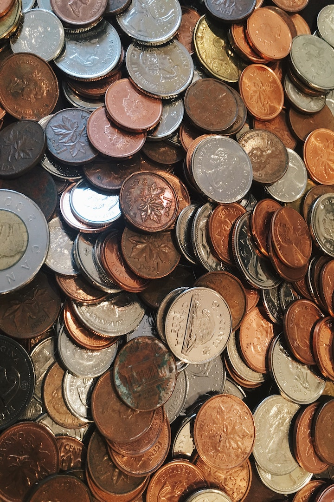

Contact US
You can still contact us directly if you would like any further information.
Mailing Address
PO BOX 2476
Fortitude Valley
QLD 4006
Phone
0407 316 144
Email us at akcsecretary@aussiekidzcharity.org.au
Aussie Kidz Charity assists the families of children under the age of 18 years old that are diagnosed with a disability. After years of supporting various well known kids charities, Aussie Kidz Charity was started in early 2000 by a group of individuals disheartened by watching an increasing percentage of donations being used to cover overheads instead of going to the ones who need it most, the Kids.
With Aussie Kidz Charity, 100% of the donations received are used for the children, with the running costs and overheads kept to an absolute minimum and looked after by the Directors and friends
We are focussing on gaining support and donations through the generosity of Directors, individuals, corporations, estate trusts and through various yearly fund raising activities.These includes the Mercedes Benz Polo Championships held each September and a Brisbane Businessman’s lunch held each November. Aussie Kidz Charity has received the Australian Taxation Office endorsement in May 2001 to allow donations over $2 to be tax deductible.
Aussie Kidz Charity has received the Australian Taxation Office endorsement in May 2001 to allow donations over $2 to be tax deductible. If you would like to know more about Aussie Kidz Charity, or to become a member simply email akcsecretary@aussiekidzcharity.org.au or call 0407316144
Australians are among the most generous people in the world per-capita when it comes to making donations to worthy causes.
If you would like to make a donation to Aussie Kidz Charity. All donations over $2 are tax deductible. Please email akcsecretary@aussiekidzcharity.org.au to request a receipt or invoice.
Please make cheques payable to Aussie Kidz Charity and mail to:
Aussie Kidz Charity
PO Box 2476
Fortitude Valley QLD 4006

You can still contact us directly if you would like any further information.
Mailing Address
PO BOX 2476
Fortitude Valley
QLD 4006
Phone
0407 316 144
Email us at akcsecretary@aussiekidzcharity.org.au